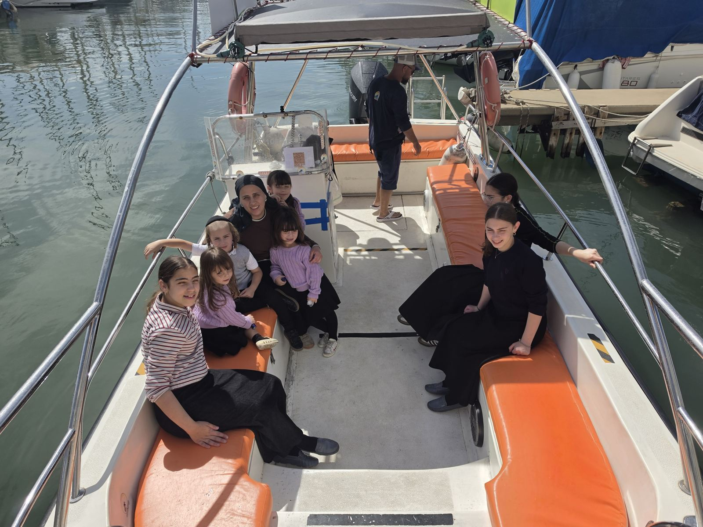
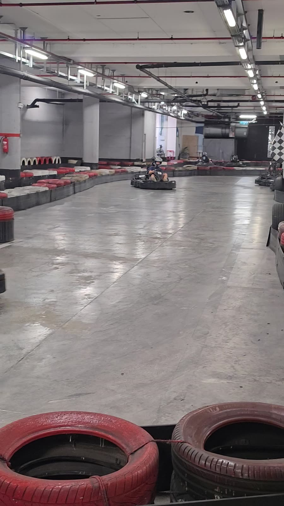
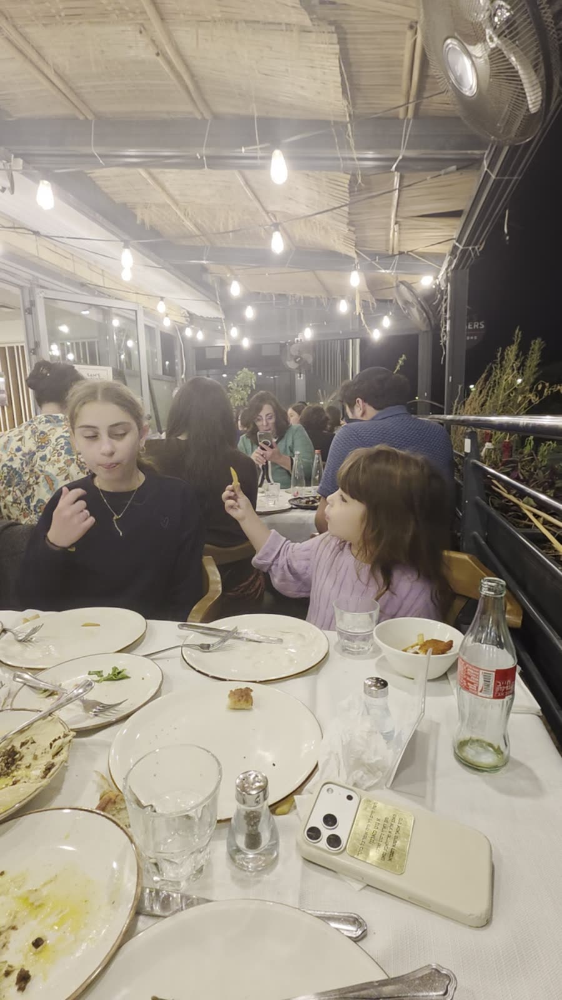

A speedboat with Kapitan Sagel, race cars, and a birthday burger party for Mommy! The whole Bernshtein gang, one epic day!סירת מרוץ עם קפיטן סגל, מכוניות מרוץ, ומסיבת יום הולדת עם המבורגרים למאמי! כל חבורת ברנשטיין, יום אחד מטורף!
Blast-off in…ממריאים בעוד…
--hrsשעות--minדק׳--secשנ׳
The day, stop by stopהיום, תחנה אחרי תחנה
Tap a photo to see it big · play the videos to see what’s comingלוחצים על תמונה כדי להגדיל · מפעילים את הסרטונים כדי לראות מה מחכה לנו
The whole routeכל המסלולGivat Ze’ev → sea → Netanya → Jerusalemגבעת זאב ← הים ← נתניה ← ירושלים
· Givat Ze’evגבעת זאב
Hit the Road!יוצאים לדרך!
Waze to Funtasea, Herzliya Marina. About an hour, plus a buffer for holiday traffic. We get there ~13:30.Waze אל שייט פנטזי, מרינה הרצליה. כשעה, ועוד זמן רזרבה לפקקי חג. מגיעים בסביבות 13:30.
Snacks packed, water bottles full, seatbelts on. First stop: the speedboat!חטיפים ארוזים, בקבוקי מים מלאים, חגורות חגורות. תחנה ראשונה: סירת המרוץ!
Hold on tight! We zoom out to sea on a super-fast boat, bouncing over the waves for 20 wild minutes. Wheee!תחזיקו חזק! יוצאים לים בסירה סופר־מהירה וקופצים על הגלים 20 דקות מטורפות. יוהוו!
Captain’s orders: hold on tight and shout “WHEEE!” on every big wave.פקודת הקפטן: מחזיקים חזק וצועקים ״יוהוו!״ על כל גל גדול.
Ages 5+ ride · the 3-year-old waves from the pier with ice creamמגיל 5 עולים לסירה · בן ה־3 מנופף מהרציף עם גלידה
Stand opposite Golda & McDonald’sהדוכן מול גולדה ומקדונלד׳ס
Confirm the 13:30 slot with Funtaseaלאשר עם שייט פנטזי את השעה 13:30
Mission 1: steer the boat! Ask the captain for a turn at the wheel.משימה 1: לנווט את הסירה! מבקשים מהקפטן תור ליד ההגה.
Helmets on, engines roaring! Real go-karts for the racers, mini electric karts for the little drivers, plus bumper cars. Who takes the checkered flag?קסדות על הראש, המנועים שואגים! קארטינג אמיתי לנהגים, קארטים חשמליים קטנים לנהגים הצעירים, וגם מכוניות מתנגשות. מי יגיע ראשון לדגל המשובץ?
Helmet on, visor down… who will be crowned the Bernshtein racing champion?קסדה על הראש, מגן למטה... מי יוכתר לאלוף המרוצים של משפחת ברנשטיין?
🏁What we did: literally a blast!מה עשינו: פשוט פיצוץ!
🏎️ Mommy, Shevy, Gitty & Henny raced go-karts for 25 minutes straight. So wild that Mommy almost got kicked off the track! 😂🏎️ מאמי, שעווי, גיטי והעני נהגו בקארטינג 25 דקות ברצף. היה כל כך פראי שמאמי כמעט הורחקה מהמסלול! 😂
🚜 Faigy, Zalmy, Itty & Chani dug and scooped on a ride-on excavator🚜 פייגי, זלמי, איטי וחני חפרו והעמיסו על מחפר ממונע
🏍️ Mini ATVs, 💥 bumper cars and 🎮 simulators🏍️ טרקטורונים קטנים, 💥 מכוניות מתנגשות ו־🎮 סימולטורים
🪙 Lots and lots of game coins!🪙 המון המון אסימונים למשחקים!
8+ & 1.30 m: go-karts · ages 4–8: kids’ karts · 3yo: rides the two-seat kart with a grown-upמגיל 8 ומגובה 1.30 מ׳: קארטינג · גילאי 4–8: קארטים לילדים · בן 3: נוסע בקארט זוגי עם מבוגר
HaMechkar 2, Netanyaהמחקר 2, נתניה
For the older kids · the little ones (5 & 3) can watch and cheer from the sideלילדים הגדולים · הקטנים (בני 5 ו־3) יכולים לצפות ולעודד מהצד
Mission 2: beat your lap time! Race once, then try to go even faster.משימה 2: לשבור את זמן ההקפה! נוסעים פעם אחת ואז מנסים עוד יותר מהר.
Watch what’s comingסרטון: מה מחכה לנוDan karting Netanya, indoor karting
Dan karting Netanya, indoor karting · YouTube (Elena Vilensky ADVERTA)
~1 hr drive up to Jerusalemכשעה נסיעה לירושלים
Happy Birthday! 🎂מזל טוב! 🎂
1 / 4
3Stop 3 · Grand finaleתחנה 3 · הגמר הגדול
Mommy’s Birthday Party 🎂מסיבת יום ההולדת של מאמי 🎂
🎉
at Sam’s Burgers, Har Hotzvim, Jerusalemבסאמ׳ס בורגר, הר חוצבים, ירושלים
🎂
Happy Birthday Mommy!יום הולדת שמח מאמי!
Candles, a birthday cake and the whole Bernshtein family singing for Mommy 🎶נרות, עוגת יום הולדת וכל משפחת ברנשטיין שרה למאמי 🎶
Cake, candles & a big family hug!עוגה, נרות וחיבוק משפחתי גדול!
Kosher · Rav Avraham Rubinכשר · הרב אברהם רוביןEveryoneכולם
Birthday cakeעוגת יום הולדתMommy’s dayהיום של מאמיBurgers & friesהמבורגר וצ׳יפס
The best part of the day: Mommy’s birthday! After the sea and the race track we drove up to Jerusalem for burgers and fries, then out came the birthday cake, the candles were lit, and the whole family sang to Mommy. Mazel tov, Mommy, we love you! 💛החלק הכי טוב ביום: יום ההולדת של מאמי! אחרי הים ומסלול המרוצים עלינו לירושלים להמבורגרים וצ׳יפס, ואז הגיעה עוגת היום הולדת, הדלקנו נרות וכל המשפחה שרה למאמי. מזל טוב מאמי, אנחנו אוהבים אותך! 💛
Make a wish, Mommy! 1… 2… 3… blow out the candles! 🕯️🕯️🕯️מאמי, תבקשי משאלה! 1... 2... 3... מכבים את הנרות! 🕯️🕯️🕯️
Kosher · hechsher of Rav Avraham Rubinכשרות מהודרת · הרב אברהם רובין
Kiryat HaMada 3, Har Hotzvim, Jerusalemקריית המדע 3, הר חוצבים, ירושלים
~10 min drive · Mincha ~18:15כ־10 דק׳ נסיעה · מנחה בסביבות 18:15
To bookלהזמין
1 / 2
4Stop 4תחנה 4
Pizza Hut Mehadrin · Kikar HaAtzmaut 3, Netanyaפיצה האט מהדרין · כיכר העצמאות 3, נתניה
18:30
Pizza Party!מסיבת פיצה!
Kosher Mehadrinכשר למהדריןBadatz Beit Yosefבד״ץ בית יוסףEveryoneכולם
Winners’ feastסעודת מנצחיםPick a toppingבוחרים תוספת
Race-winners’ feast! Hot pizza right on the big square by the sea, next to the fountain. Everyone picks their favorite topping.סעודת המנצחים! פיצה חמה ממש בכיכר הגדולה ליד הים, ליד המזרקה. כל אחד בוחר את התוספת האהובה עליו.
Champions eat first! Choose your topping and race for the cheesiest slice.האלופים אוכלים ראשונים! בוחרים תוספת ומתחרים על המשולש הכי גבינתי.
Everyone! Kosher Mehadrin · Badatz Beit Yosefכולם! כשר למהדרין · בד״ץ בית יוסף
A short walk from the square to the cliffs. We watch the sun dive into the sea, snap our family photo, and every adventurer gets a certificate!הליכה קצרה מהכיכר אל הצוקים. מסתכלים איך השמש צוללת לים, מצטלמים לתמונה משפחתית, וכל הרפתקן מקבל תעודה!
Final countdown: 3… 2… 1… splash! Watch the sun dive into the sea.ספירה לאחור: 3... 2... 1... שפלאש! מסתכלים איך השמש צוללת לים.
Everyone!כולם!
Mission 3: spot the exact moment the sun touches the sea!משימה 3: לזהות את הרגע המדויק שבו השמש נוגעת בים!
At every stop there’s a secret mission. Complete all three and earn your official Adventurer Certificate at sunset!בכל תחנה מחכה משימה סודית. מי שמשלים את כל השלוש מקבל תעודת הרפתקן רשמית בשקיעה!
Certificates handed out at sunset on the cliffsחלוקת תעודות בשקיעה על הצוקים
Three chapters, one unforgettable family day. Scroll, tap and relive it.שלושה פרקים, יום משפחתי אחד בלתי נשכח. גוללים, לוחצים וחווים שוב.
13 photos · 30 videos13 תמונות · 30 סרטונים

Chapter 1פרק 1
Out on the Wavesיוצאים לגלים
Herzliya Marina · with Kapitan Sagelמרינה הרצליה · עם קפיטן סגל
We set sail from Herzliya Marina, the wind in our hair and the whole family on deck. Kapitan Sagel took us out to sea, and every kid got a turn at the front.הפלגנו ממרינה הרצליה, רוח בשיער וכל המשפחה על הסיפון. קפיטן סגל לקח אותנו לים, וכל ילד קיבל תור בחרטום.
Look what happened! · tap to revealתראו מה קרה! · לוחצים לגלות
All 17 momentsכל 17 הרגעים

Chapter 2פרק 2
Race Day!יום מרוצים!
Dan Karting · Netanyaדן קארטינג · נתניה
Literally a blast! Go-karts, mini ATVs, bumper cars, racing simulators and lots and lots of game coins.פשוט פיצוץ! קארטינג, טרקטורונים קטנים, מכוניות מתנגשות, סימולטורי מרוץ והמון המון אסימונים.
Kid spotlight · tap a nameזרקור על הילדים · לוחצים על שם
Raced go-karts for 25 minutes straight! So wild that Mommy almost got kicked off the track 😂נהגו בקארטינג 25 דקות ברצף! היה כל כך פראי שמאמי כמעט הורחקה מהמסלול 😂
Took the controls of the ride-on excavator and dug like real builders 🚜תפסו פיקוד על המחפר וחפרו כמו בנאים אמיתיים 🚜
Look what happened! · tap to revealתראו מה קרה! · לוחצים לגלות
All 22 momentsכל 22 הרגעים

Chapter 3פרק 3
Happy Birthday Mommy!יום הולדת שמח מאמי!
Mommy’s Birthday Party · at Sam’s Burgers, Jerusalemמסיבת יום ההולדת של מאמי · בסאמ׳ס בורגר, ירושלים
The best part of the day. A birthday cake, candles, and the whole family singing to Mommy. We love you! 💛החלק הכי טוב ביום. עוגת יום הולדת, נרות, וכל המשפחה שרה למאמי. אנחנו אוהבים אותך! 💛
🎶
Mami’s Yontiff Boatמאמי׳ס יום־טוב שיף
Look what happened! · tap to revealתראו מה קרה! · לוחצים לגלות
All 4 momentsכל 4 הרגעים
What a day. Dank Hashem! 💛איזה יום. ברוך השם! 💛
On airבשידור📻
Bernshtein Radioרדיו ברנשטיין
7 brand-new songs all about us, for every part of the trip, plus a bonus song. Press play, read the words and sing LOUD (Shevy, you know what to do 🥜).12 שירים חדשים לגמרי עלינו, לכל חלקי הטיול, ועוד שיר בונוס. לוחצים פליי, קוראים את המילים ושרים בקול (שֶׁעוִוי, את יודעת מה לעשות 🥜).
More family adventure ideasעוד רעיונות להרפתקאות משפחתיות
Ideas for other days. Each one can get its own playlist.רעיונות לימים אחרים. לכל אחד אפשר להכין פלייליסט משלו.
Big wow tripsטיולי וואו גדולים
Indoor skydivingצניחה חופשית בתוך מבנה
Fly in a wind tunnel · ages 4+ · little ones can watchטסים במנהרת רוח · מגיל 4 · הקטנים יכולים לצפות
Like flying without a plane — FlyBox in Rishon.כמו לעוף בלי מטוס — FlyBox בראשון לציון.
Songs coming — Jerusalem / explorer vibesשירים בקרוב — אווירת ירושלים וחוקרים
Adventure for the big kids (19+)הרפתקאות לגדולים (19+)
Researched Mon 28 Sep 2026 (Chol HaMoed Sukkot). Green = the venue's own site says it's open today. Orange = call before driving (holiday hours, weather, and booking slots). Drive times from Jerusalem are rough and don't include holiday traffic.נבדק ביום שני, 28 בספטמבר 2026 (חול המועד סוכות). ירוק = האתר של המקום עצמו אומר שהוא פתוח היום. כתום = להתקשר לפני שנוסעים (שעות חג, מזג אוויר ושעות פנויות). זמני הנסיעה מירושלים משוערים ולא כוללים פקקי חג.
Tandem skydive · SkyKefצניחה בטנדם · סקייכיףCall firstלהתקשר קודם
Sde Teiman (~10 min N of Be’er Sheva) · ~1h20 drive · ages 10+ · max 110 kg (extra charge over 90 kg / 1.90 m)שדה תימן (כ־10 דק׳ צפונית לבאר שבע) · כשעה ו־20 דק׳ נסיעה · מגיל 10 · עד 110 ק״ג (תוספת מעל 90 ק״ג / 1.90 מ׳)
Real jump from 10,000 or 12,000 ft with an instructor. Video + photos available. Plan on ~3 hours there. Site lists Sun–Thu 9:00–19:00, but its FAQ says jumps happen “Fri, Sat & holidays”, so call to confirm they jump today.קפיצה אמיתית מ־10,000 או 12,000 רגל עם מדריך. אפשר להוסיף וידאו ותמונות. כדאי לתכנן כ־3 שעות במקום. באתר רשום א׳–ה׳ 9:00–19:00, אבל בשאלות הנפוצות כתוב שקופצים ״בשישי, שבת וחגים״, אז להתקשר ולוודא שקופצים היום.
Powered parachute (“flying ATV”) · Israel Extremeמצנח ממונע (״טרקטורון מעופף״) · Israel ExtremeCall firstלהתקשר קודם
Ein Vered airstrip, Sharon · ~1h10 drive · ages 6+ · pilot + 1 passengerמנחת עין ורד, השרון · כשעה ו־10 דק׳ נסיעה · מגיל 6 · טייס + נוסע אחד
20- or 40-minute flights over the Sharon fields to the coast, with a photos option. They fly in the early morning or ~2 hours before sunset, so today’s realistic option is the evening slot. Book by phone.טיסות של 20 או 40 דק׳ מעל שדות השרון עד החוף, עם אפשרות לתמונות. טסים בבוקר מוקדם או כשעתיים לפני השקיעה, אז היום האפשרות הריאלית היא הטיסה של הערב. הזמנה בטלפון.
Indoor skydiving · FlyBoxצניחה חופשית בתוך מבנה · FlyBox✓ Open today✓ פתוח היום
Rishon LeZion (Lake Park) · ~50 min drive · ages 4+ · Chol HaMoed hours 09:00–20:30ראשון לציון (פארק האגם) · כ־50 דק׳ נסיעה · מגיל 4 · שעות חול המועד 09:00–20:30
The safe backup: iFLY wind tunnel. Intro (2 min flying) or VIP (4 min + video). There’s a special Sukkot deal on the 10:00 slot.הגיבוי הבטוח: מנהרת הרוח של iFLY. היכרות (2 דק׳ טיסה) או VIP (4 דק׳ + וידאו). יש מבצע סוכות לשעה 10:00.
RZR / Tomcar desert tour · Canaan (Kfar Adumim)סיור RZR / תומקאר במדבר · כנען (כפר אדומים)Call firstלהתקשר קודם
Kfar Adumim junction, Judean Desert · ~25 min drive · drivers 18+ with a valid licence · riders 16+ (no licence needed)צומת כפר אדומים, מדבר יהודה · כ־25 דק׳ נסיעה · נהגים מגיל 18 עם רישיון בתוקף · נוסעים מגיל 16 (בלי רישיון)
Guided off-road loops to desert lookouts (Wadi Qelt / St. George area). Tours run 1–4 hours. 4-seat vehicles. Pre-booking only.מסלולי שטח מודרכים לתצפיות במדבר (אזור ואדי קלט / מנזר סנט ג׳ורג׳). הסיורים נמשכים 1–4 שעות. רכבים של 4 מושבים. בהזמנה מראש בלבד.
Tomcar / RZR in the Jerusalem hills · Matzokתומקאר / RZR בהרי ירושלים · מצוקCall firstלהתקשר קודם
Moshav Aminadav · ~15–20 min drive · drivers 19+ with a licence held 1+ yearמושב עמינדב · כ־15–20 דק׳ נסיעה · נהגים מגיל 19 עם ותק של שנה לפחות ברישיון
Guided off-road drive through Aminadav forest. Usually goes out with at least 2 vehicles, so ask about going alone.נסיעת שטח מודרכת ביער עמינדב. בדרך כלל יוצאים עם 2 רכבים לפחות, אז כדאי לשאול על יציאה לבד.
Similar option: Top Reizer (Mevo Beitar, ~25 min, Can-Am RZRs): אפשרות דומה: טופ רייזר (מבוא ביתר, כ־25 דק׳, רכבי Can-Am RZR): 055-452-4116
Israel’s longest zipline · Deer Landהאומגה הארוכה בישראל · ארץ הצביCall firstלהתקשר קודם
Opposite Kfar Etzion, Gush Etzion · ~30 min driveמול כפר עציון, גוש עציון · כ־30 דק׳ נסיעה
400 m zipline, 120 m above a canyon, with a jeep ride back up. There’s also a ropes park and a 140 m zipline. Listed hours are 9:30–16:30/17:30 and they ask you to call ahead.אומגה של 400 מ׳, בגובה 120 מ׳ מעל קניון, עם נסיעה בג׳יפ חזרה למעלה. יש גם פארק חבלים ואומגה של 140 מ׳. השעות הרשומות הן 9:30–16:30/17:30 ומבקשים להתקשר מראש.
Rappel off the Old City walls · PAMIסנפלינג מחומות העיר העתיקה · פמ״י✓ Open today✓ פתוח היום
Southern ramparts walk from Jaffa Gate · ~20 min · ages 9+ · 11:45–16:45טיילת החומות הדרומית משער יפו · כ־20 דק׳ · מגיל 9 · 11:45–16:45
A special Sukkot activity: rappel down the wall near Zion Gate with certified guides.פעילות מיוחדת לסוכות: סנפלינג מהחומה ליד שער ציון עם מדריכים מוסמכים.
Tandem paragliding · Kanfayimמצנח רחיפה בטנדם · כנפייםCall firstלהתקשר קודם
Arsuf / Netanya cliffs · ~1h drive · ages 5+ · over 100 kg by arrangementארסוף / צוקי נתניה · כשעה נסיעה · מגיל 5 · מעל 100 ק״ג בתיאום
Coastal ridge soaring with a licensed pilot: 10- or 20-minute flights, video available. Wind-dependent.ריחוף מעל צוקי החוף עם טייס מוסמך: טיסות של 10 או 20 דק׳, אפשר להוסיף וידאו. תלוי ברוח.